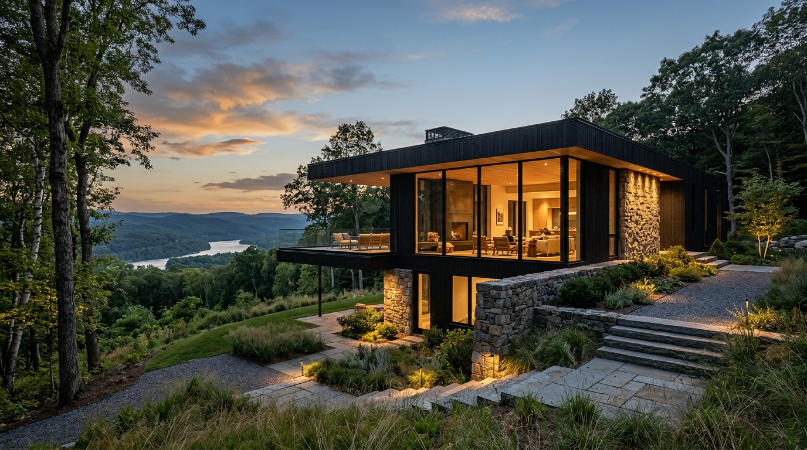
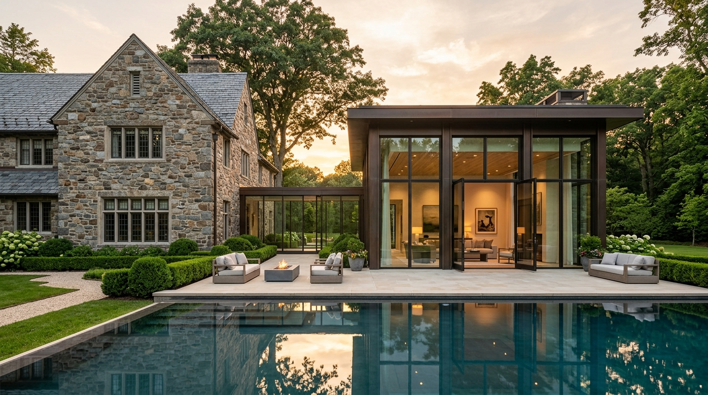
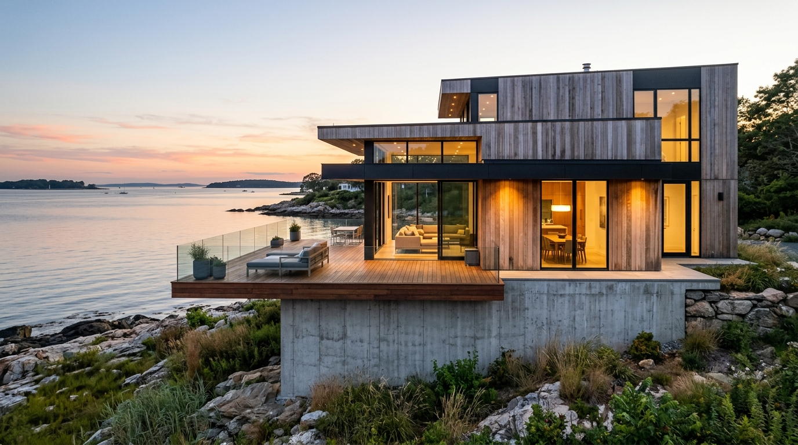
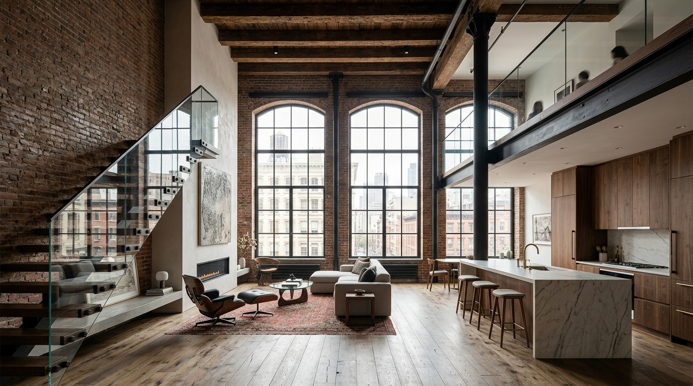

New Construction • Steep SlopeHudson Valley Hillside Residence
A stepped two-volume timber and stone residence anchored into the hillside, framing panoramic Hudson River vistas with minimal environmental grading.
Scale / Program
5,800 SF Custom Home
Zoning Outcome
Unanimous ZBA Variance

Addition • Historic ReviewGreenwich Manor Glass Pavilion Addition
A modern 3,200 SF glass-and-bronze entertaining wing connected via a minimalist glass breezeway to a 1928 stone manor.
Scale / Scope
3,200 SF Add. / 6,500 SF Reno
Commission Status
Cert. of Appropriateness

New Construction • Coastal ResilienceLong Island Sound Resilient Coastal Home
A 4,600 SF high-performance waterfront residence with an architectural concrete plinth base and cantilevered decks designed for 100-year storm surges.
Scale / Program
4,600 SF Coastal Residence
Permitting Status
Full CAM & DEEP Clearance

Renovation • Interior ArchitectureTribeca Warehouse Spatial Transformation
A complete spatial overhaul of a 19th-century duplex loft featuring custom architectural stairs, structural steel mezzanine, and acoustic decoupling.
Scale / Scope
4,200 SF Duplex Loft
Approval Status
NYC DOB / LPC Sign-off
 Commercial • 3D Visualization
Commercial • 3D Visualization
Midtown Mixed-Use Tower Archviz Suite
Comprehensive 3D exterior renderings, lobby interior spatial simulations, and solar envelope studies created for institutional developer pre-leasing.
Scope
4K Still Archviz & Animation
Client Type
Developer / Architect Peer